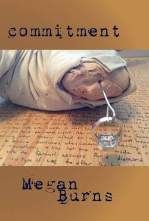

|
 |
ISBN 978-1935084839
110 pages: $15.00
April, 2015
Commitment is an artifact of pain. Like desire, loss attaches itself to or for an object, but pain remains relegated to the landscape of the imagination, nebulous and without borders. Like Charcot's hysterics, these poems perform pain conscious of the audience's gaze but unable to contain their intimate understanding of it. Divorce, the mother's loss of her children, the brother's suicide, and mental illness all provide external markers for what is essentially a willingness to wade down into the darkest waters of the self. Language dissolves when pain occurs at any high level; the brain loses its ability to make speech. Commitment then is not the epicenter of pain, but a careful retracing over wounds to braid words back onto the unspeakable, to give shape and edges to that which threatens to engulf.
Megan Burns's Commitment is a bold interrogation of the interior during a time of grieving. The poems "look clearly at the darkness we inhabit," explore the fluidity of loss—"how it echoes, swells, & hollows"—and ask if we can be content in fragments. Ultimately the answer is yes. These fierce poems are "wedded to the sticking points of life," as am I, and I'm thankful that Burns is too.
—Gina Myers, author of Hold It Down
Megan Burn's Commitment flares up savage and brilliant against despair. Navigating the dark, unsounded deeps of two losses (suicide and divorce), these poems refuse gentility, "niceness." Torn and tearing through grief, the speaker knows she "may only have one chance to write [herself] out of here." When the brother suicides, the lover betrays, she is "not afraid / [to] stay open // fill the space / left by leaving." Poised upon multiplying sorrows, constructing dialogues with the lost, Burns demands, how endure when "you can tumble toward death / & hardly know it"? These poems, burrowing through the bones of death and affliction, achingly balance, hinged on love's tenacity: "slice me apart. take me in pieces" Commitment is a seething, simmering light, a bright flambeau against the chaos of loss.
—Marthe Reed, author of Nights Reading and Tender Box: A Wunderkammer